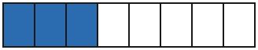

Was ist ein Bruch?
Mit einem KI-Tutor lernen
Ein KI-Tutor erklärt dir diese Seite und hilft dir bei den Übungen. Wähl deinen Assistenten:
Mit Claude öffnen Mit ChatGPT öffnen Mit Mistral Vibe öffnen
Du nutzt dein eigenes Konto beim Anbieter. Der Assistent ist kein Angebot von lernapps.net: lernapps liefert nur Inhalte und Übungen. Die Wahl gilt für alle Seiten, nur auf diesem Gerät.
Ein Stück von der Pizza
Eine Pizza wird in 4 gleich große Stücke geschnitten, für 4 Kinder. Jedes Kind bekommt ein Stück. Wie viel von der Pizza ist das? Mit natürlichen Zahlen wie 1, 2 oder 3 kannst du das nicht sagen. Dafür gibt es Brüche: Sie sagen, welcher Teil eines Ganzen gemeint ist. Jedes Kind bekommt der Pizza, gesprochen „ein Viertel“.
Anschaulich erklärt
Das Ganze ist hier ein Streifen. Er ist in 8 gleich große Teile geteilt. 3 Teile davon sind blau gefärbt.

Der ganze Streifen ist das Ganze. Zähle erst alle Teile, dann die blauen.
Quelle: eigene Zeichnung. Lizenz: CC0-1.0.Den blauen Anteil schreibst du als Bruch: . Du sprichst „drei Achtel“. Der Strich in der Mitte heißt Bruchstrich.
- Bruch
Ein Bruch beschreibt einen Teil eines Ganzen, zum Beispiel eines Streifens.
- Zähler
Der Zähler steht über dem Bruchstrich. Er zählt, wie viele dieser Teile gemeint sind, hier 3.
- Nenner
Der Nenner steht unter dem Bruchstrich. Er sagt, in wie viele gleich große Teile das Ganze geteilt ist, hier 8.
Die Teile müssen gleich groß sein
Ein Bruch passt nur, wenn alle Teile gleich groß sind. Das gilt beim Streifen, bei einer Pizza und bei einer Tafel Schokolade.
Beispiel
Eine Tafel Schokolade
Eine Tafel hat 12 gleich große Stücke. Du isst 5 davon. Welchen Bruch hast du gegessen?
| Das Ganze | die ganze Tafel |
|---|---|
| Gleich große Stücke | 12, also ist der Nenner 12 |
| Gegessene Stücke | 5, also ist der Zähler 5 |
| Bruch | der Tafel |
Übung
Übung
Lösung
7/10 richtige Antwort
Der Streifen hat 10 gleich große Teile (Nenner), 7 davon sind blau (Zähler).
3/10
Das sind die weißen Teile. Gefragt ist der blaue Teil.
10/7
Zähler und Nenner sind vertauscht. Der Nenner ist die Zahl aller Teile, hier 10.
7/3
Der Nenner zählt alle Teile des Ganzen, nicht nur die weißen. Alle Teile sind 10.
Alle 10 Teile sind gleich groß und bilden das Ganze. 7 davon sind blau, also .
Mehr dazu:
Übung
Lösung
5/6 richtige Antwort
Die Pizza hat 6 gleich große Stücke, 5 davon sind blau, also gegessen.
1/6
Das ist das Stück, das noch übrig ist. Gefragt ist, was gegessen ist.
6/5
Zähler und Nenner sind vertauscht. Unten steht die Zahl aller Stücke.
5/1
Der Nenner zählt alle Stücke der Pizza, auch die gegessenen. Alle Stücke sind 6.
Das Ganze sind 6 Stücke, 5 sind gegessen, also .
Mehr dazu:
Übung
Lösung
Richtige Antwort: Die Aussage stimmt nicht.
Die Teile sind nicht gleich groß, das blaue Teil ist das größte. Ein Bruch wie gilt nur, wenn alle 4 Teile gleich groß sind.
Mehr dazu:
Übung
Drei Beispielaufgaben, jede mit ihrer Lösung:
Aufgabe Nr. 1
Ein Kuchen ist in 12 gleich große Stücke geschnitten. 10 Stücke sind gegessen. Welche Zahl steht im Zähler des Bruchs für den gegessenen Teil, wenn du den Bruch nicht kürzt?
Tipp
Der Zähler steht oben und zählt die Stücke, von denen die Rede ist.
Lösung
- Der Kuchen hat 12 gleich große Stücke, also ist der Nenner 12.
- 10 Stücke sind gegessen, also ist der Zähler 10.
Richtige Antwort: 10
Aufgabe Nr. 2
Ein Kuchen ist in 7 gleich große Stücke geschnitten. 3 Stücke sind gegessen. Welche Zahl steht im Zähler des Bruchs für den gegessenen Teil, wenn du den Bruch nicht kürzt?
Tipp
Der Zähler steht oben und zählt die Stücke, von denen die Rede ist.
Lösung
- Der Kuchen hat 7 gleich große Stücke, also ist der Nenner 7.
- 3 Stücke sind gegessen, also ist der Zähler 3.
Richtige Antwort: 3
Aufgabe Nr. 3
Ein Kuchen ist in 12 gleich große Stücke geschnitten. 7 Stücke sind gegessen. Welche Zahl steht im Zähler des Bruchs für den gegessenen Teil, wenn du den Bruch nicht kürzt?
Tipp
Der Zähler steht oben und zählt die Stücke, von denen die Rede ist.
Lösung
- Der Kuchen hat 12 gleich große Stücke, also ist der Nenner 12.
- 7 Stücke sind gegessen, also ist der Zähler 7.
Richtige Antwort: 7